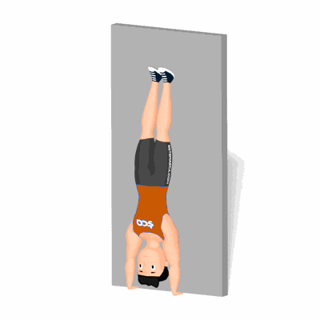

Handstand Push Up

É uma exercício muito eficiente para o desenvolvimento da flexibilidade e da força na parte superior do corpo, juntamente com altas doses de coordenação e equilíbrio.
Ficha Técnica
Tipo: CrossFit
Grupo Muscular: Corpo
Aparelho: Nenhum
Músculos: Nenhum
Como realizar
- De frente a uma parede, coloque as mãos no chão em uma posição levemente mais larga do que o tamanho de seus ombros;
- Posicione as pernas em uma posição dividida (uma dobrada para frente e a outra esticada para trás);
- Mantenha os braços esticados e o abdômen firme, lance as pernas a cima e fique de cabeça para baixo;
- Destrave os cotovelos e dobre-os, permitindo que sua cabeça comece a se mover para baixo e levemente em direção à parede. A cabeça deve ficar na frente das mãos até encostar de leve no chão;
- A partir da posição abaixada, impulsione para cima para apoiar e traga a cabeça entre os braços para finalizar.
 RC STORE
RC STORE